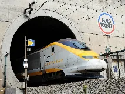
Tunnel sous la Manchebing Tour Eiffelwiki-fr
Tour Eiffelwiki-fr Statue de la Libertéwiki-fr
Statue de la Libertéwiki-fr Big Benwiki-fr
Big Benwiki-fr Sagrada Famíliawiki-fr
Sagrada Famíliawiki-fr Opéra de Sydneywiki-fr
Opéra de Sydneywiki-fr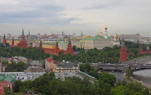
Kremlin de Moscoubing Château de Neuschwansteinwiki-fr
Château de Neuschwansteinwiki-fr Mont Rushmorewiki-fr
Mont Rushmorewiki-fr Empire State Buildingwiki-fr
Empire State Buildingwiki-fr Burj Khalifawiki-fr
Burj Khalifawiki-fr Angkor Vatwiki-fr
Angkor Vatwiki-fr Cité interditewiki-fr
Cité interditewiki-fr Alhambra de Grenadewiki-fr
Alhambra de Grenadewiki-fr Château de Himejiwiki-fr
Château de Himejiwiki-fr Porte de Brandebourgwiki-fr
Porte de Brandebourgwiki-fr Tour de Pisewiki-fr
Tour de Pisewiki-fr Notre-Dame de Pariswiki-fr
Notre-Dame de Pariswiki-fr Mont Saint-Michelwiki-fr
Mont Saint-Michelwiki-fr Château de Versailleswiki-fr
Château de Versailleswiki-fr Mosquée bleuewiki-fr
Mosquée bleuewiki-fr Sainte-Sophiewiki-fr
Sainte-Sophiewiki-fr Palais de Topkapiwiki-fr
Palais de Topkapiwiki-fr Golden Gate Bridgewiki-fr
Golden Gate Bridgewiki-fr CN Towerwiki-fr
CN Towerwiki-fr Château d'Édimbourgwiki-fr
Château d'Édimbourgwiki-fr Palais de Buckinghamwiki-fr
Palais de Buckinghamwiki-fr Cathédrale de Colognewiki-fr
Cathédrale de Colognewiki-fr Basilique Saint-Pierrewiki-fr
Basilique Saint-Pierrewiki-fr Château de Chambordwiki-fr
Château de Chambordwiki-fr Grande mosquée de Djennéwiki-fr
Grande mosquée de Djennéwiki-fr Temple du Cielwiki-fr
Temple du Cielwiki-fr Château de Praguewiki-fr
Château de Praguewiki-fr Palais du Potalawiki-fr
Palais du Potalawiki-fr Bourj Al Arabwiki-fr
Bourj Al Arabwiki-fr Kinkaku-jiwiki-fr
Kinkaku-jiwiki-fr Cathédrale Saint-Basilewiki-fr
Cathédrale Saint-Basilewiki-fr Alcazar de Sévillewiki-fr
Alcazar de Sévillewiki-fr Pont de Brooklynbing
Pont de Brooklynbing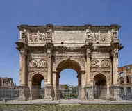
Arc de Triomphewiki-fr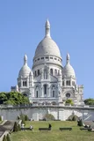
Sacré-Cœur de Montmartrewiki-fr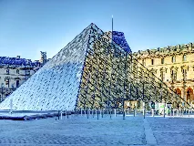
Pyramide du Louvrewiki-fr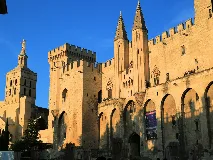
Palais des Papeswiki-fr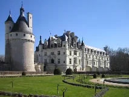
Château de Chenonceauwiki-fr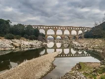
Pont du Gardwiki-fr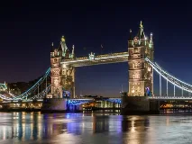
Tower Bridgewiki-fr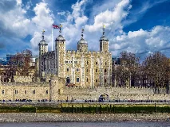
Tour de Londreswiki-fr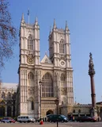
Abbaye de Westminsterwiki-fr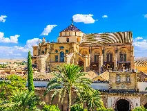
Mosquée-cathédrale de Cordouewiki-fr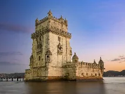
Tour de Belémwiki-fr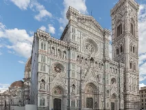
Cathédrale Santa Maria del Fiorewiki-fr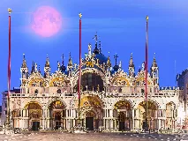
Basilique Saint-Marcwiki-fr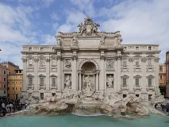
Fontaine de Treviwiki-fr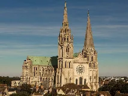
Cathédrale de Chartreswiki-fr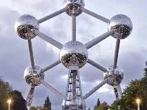
Atomiumwiki-fr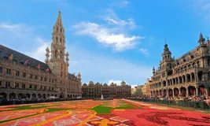
Grand-Place de Bruxelleswiki-fr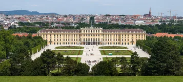
Château de Schönbrunnwiki-fr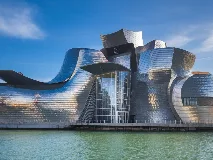
Musée Guggenheim (Bilbao)wiki-fr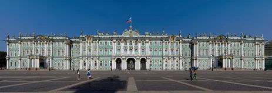
Palais d'Hiverwiki-fr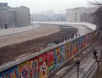
Mur de Berlinwiki-fr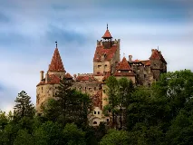
Château de Branwiki-fr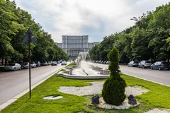
Palais du Parlement (Bucarest)wiki-fr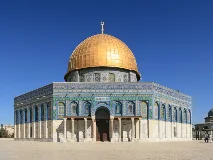
Dôme du Rocherwiki-fr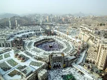
Masjid al-Haramwiki-fr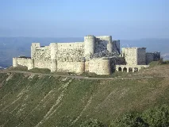
Krak des Chevalierswiki-fr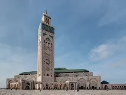
Mosquée Hassan-IIwiki-fr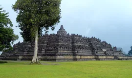
Borobudurwiki-fr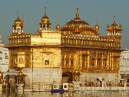
Temple d'Or d'Amritsarwiki-fr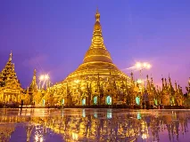
Pagode Shwedagonwiki-fr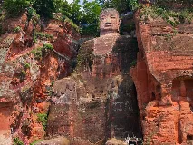
Bouddha de Leshanwiki-fr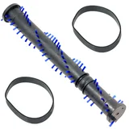
Petronas Towersbing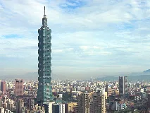
Taipei 101bing
Maison-Blanchewiki-en
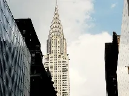
Chrysler Buildingbing
Lincoln Memorialwiki-fr
Hollywood Signwiki-fr
Capitole des États-Uniswiki-fr
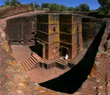
Églises de Lalibelawiki-fr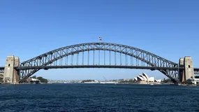
Harbour Bridgewiki-en